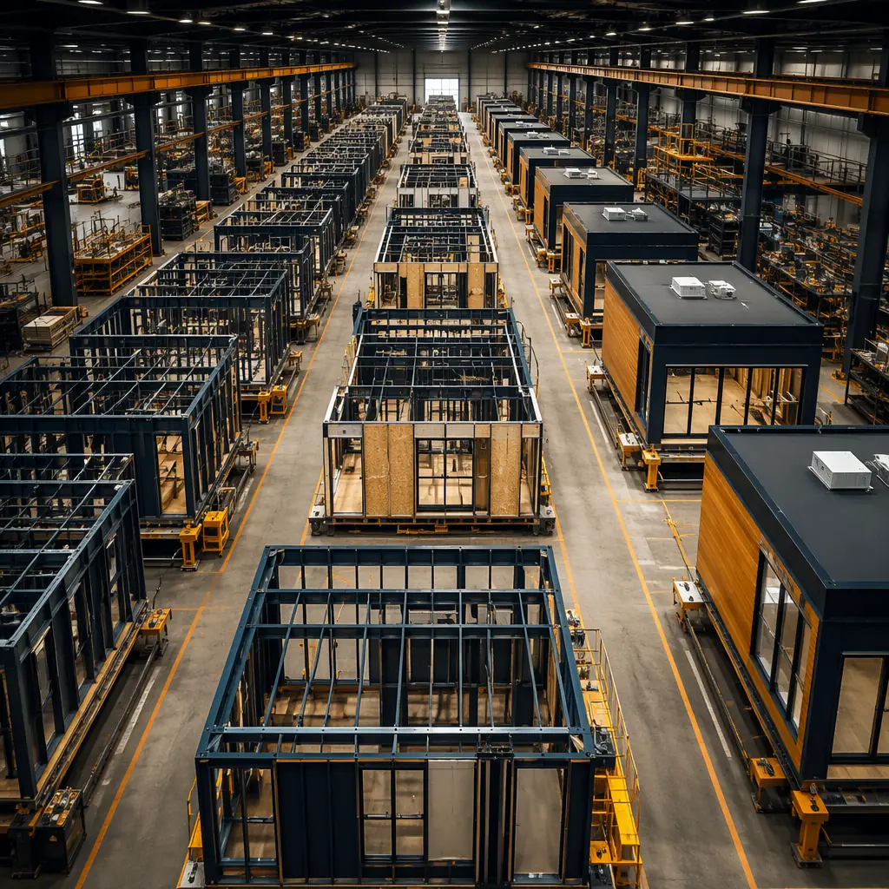
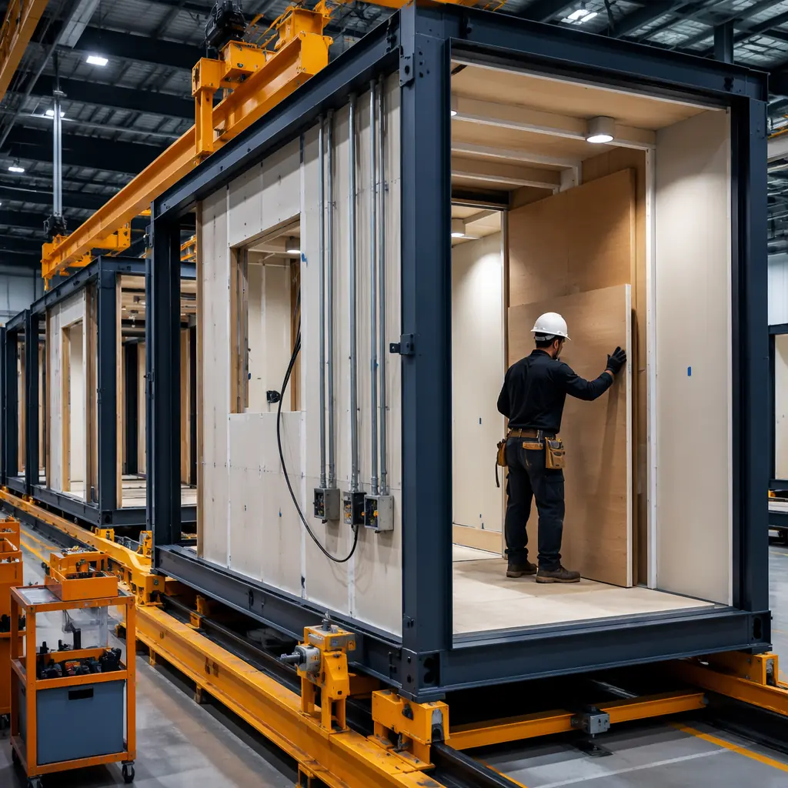
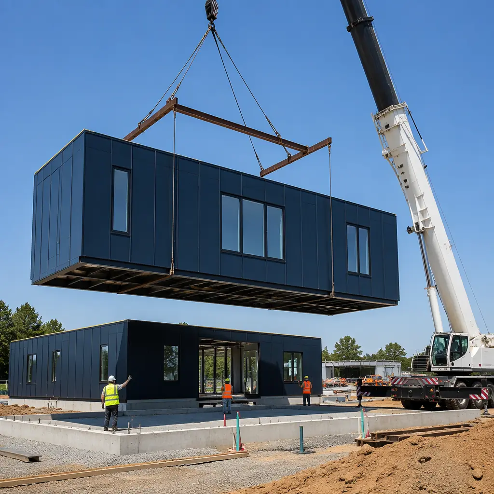
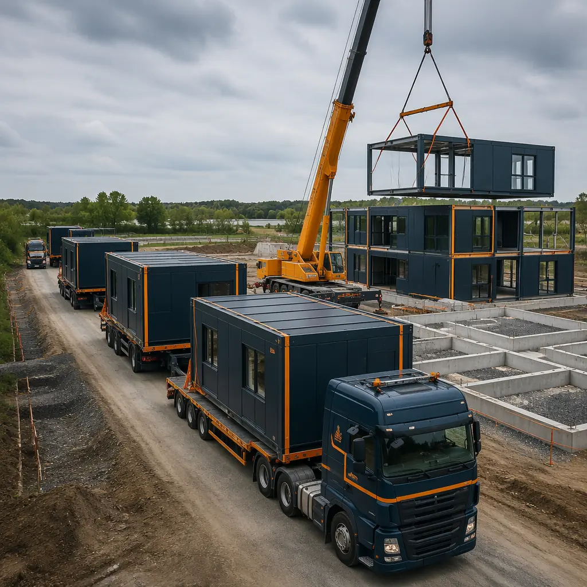

For a franchise brand, time is the single most expensive line item on the expansion balance sheet. Every month a new location sits under construction is a month of lost revenue, a month of carrying costs on undeveloped land, and a month that a competitor might enter the market first. When a chain needs to open 10, 20, or 50 locations simultaneously across multiple markets, traditional site-built construction becomes not just slow but structurally incapable of delivering the required speed. Modular construction changes the math entirely — turning location rollout from a sequential process into a parallel one.

Why Franchise Rollout Is the Ideal Modular Application
Modular construction delivers speed and cost advantages for any project, but its economics are uniquely powerful for chain rollouts. The reason is simple: standardization. A single franchise prototype built once in a factory can be replicated dozens of times with near-zero design repetition cost and continuously improving production efficiency.
Here is what modular brings to the chain expansion equation that traditional construction cannot match:
- Parallel production. A developer building five locations traditionally sequences them: site A foundation → site A framing → site A finishes → site B foundation → and so on. Modular decouples factory production from site preparation. While foundations are being poured simultaneously across five sites, all five building modules are being manufactured in parallel on the factory floor. The result: five locations open in the time traditional construction takes to open one.
- Brand consistency at scale. When every module is built to the same digital model in a climate-controlled factory with standardized QC processes, brand consistency is no longer dependent on the variable skill levels of five different site crews. The 50th location is identical to the first — the same finishes, the same MEP layout, the same customer experience. For QSR brands where kitchen workflow consistency directly impacts throughput and revenue, this is not cosmetic; it is operational.
- 88% lower weather delay impact. Factory production eliminates weather as a construction variable. Modules are built indoors regardless of site conditions. The site preparation phase — foundation, utilities, access roads — can proceed during favorable weather windows because it is not coupled to the building production timeline. For chains expanding into markets with short construction seasons, this is the difference between opening in spring versus waiting another year.
- Learning curve economics. In traditional construction, each new location starts from zero on the learning curve: a new site crew, new subcontractors, new weather, new unforeseen conditions. In modular, every module built on the same production line benefits from the accumulated efficiency of every module that came before it. Production time per module typically decreases 8–12% between the first unit and the twentieth — a compounding advantage that traditional construction cannot replicate.

A franchise brand that builds its 50th location with the same team, the same weather delays, and the same cost overrun risks as its first location has not built a scalable business model. Modular construction makes the 50th location cheaper, faster, and more predictable than the 5th — and that is the definition of a business model that scales.
The Economics of Multi-Location Modular Rollout
To understand why modular's cost advantage grows with location count, consider a chain planning to open 20 locations over 24 months. Here is how the numbers compare:
| Metric | Traditional (20 locations) | Modular (20 locations) | Advantage |
|---|---|---|---|
| Construction timeline per location | 8–12 months | 4–6 months (site + factory parallel) | 50–60% faster |
| Total program duration (20 locations) | 36–48 months (sequential) | 18–24 months (parallel batch) | 12–24 months saved |
| Cost per sq ft (locations 1–5) | $220–280 | $200–250 | 8–12% lower |
| Cost per sq ft (locations 16–20) | $220–280 (flat) | $175–220 | 15–22% lower |
| Revenue acceleration (20 locations) | Baseline | +$2.4M–4.8M per location (6–12 months early revenue) | $48–96M total program revenue gain |
The revenue acceleration advantage is the number that should command the most attention from franchise leadership. A QSR location generating $400,000 monthly revenue that opens 8 months earlier produces $3.2 million in additional revenue that is permanently captured — revenue that would have gone to a competitor if that market entry had been delayed. Across a 20-location program, the revenue acceleration alone can exceed $60 million.

Prototype Development — Getting the First Unit Right
The economics of a modular franchise rollout depend entirely on the quality of the prototype. Because every subsequent location replicates the prototype's design, any error embedded in the prototype is replicated at scale. Here is the prototype development process that MODURA recommends for chain operators:
- Operational design first. Before any architectural drawings, map the operational workflow: kitchen throughput for QSR brands, customer flow for retail chains, equipment layout for fitness franchises. The module design must optimize for the operational workflow, not the other way around.
- Site-type templating. Most chains deploy across multiple site types: standalone pad sites, inline retail units, end-cap locations, and drive-through configurations. The prototype should include a core module that remains identical across all site types, with site-specific components (entrance orientation, drive-through lane, facade treatments) treated as configurable options rather than full redesigns.
- Factory pilot build. Build the first complete module as a factory pilot — fully finished, fully inspected, with all MEP systems commissioned. Run operational simulations in the factory. Identify every interference, every clearance issue, and every installation sequence problem before the design is frozen. Fixing a problem on the factory floor costs hours; fixing it across 20 locations costs months.
- Documentation package. The prototype produces not just a building but a complete production documentation package: digital fabrication files for the factory floor, standardized installation sequence for site crews, QC inspection checkpoints for third-party verification, and maintenance manuals for franchise operators.
The prototype is not a building. The prototype is a manufacturing process that happens to produce a building. When you approach it that way — as an industrial engineer optimizing a production line, not an architect designing a one-off structure — every subsequent location benefits from the optimization.
Sector-Specific Rollout Strategies
Quick-Service Restaurants (QSR)
QSR brands face the most extreme time-to-revenue pressure. A new location costs $1.5–3.5 million to build, and every month of construction delay costs $150,000–400,000 in lost revenue. Modular construction addresses this directly: the kitchen module — the most complex and regulation-intensive component — is factory-built with all hood systems, fire suppression, plumbing, and electrical pre-installed and pre-inspected. A QSR chain opening 50 locations annually with modular can compress its total build pipeline from 36 months to 18 months, effectively gaining 18 months of market exclusivity in every new territory.
Fitness & Health Club Franchises
Fitness franchises require large clear-span spaces with specific MEP requirements: high-capacity HVAC for occupied workout zones, specialized plumbing for locker rooms, and heavy electrical loads for equipment. The factory-built approach pre-installs MEP rough-in within the module frame, eliminating the coordination delays that plague fitness facility construction. Standardized locker room and shower modules are particularly well-suited to factory production — all tile work, plumbing rough-in, and waterproofing is completed in controlled factory conditions before site delivery.
Retail & Service Chains
For retail chains, time-to-market directly competes with lease commencement dates. A retailer signing a 10-year lease begins paying rent on day one of the lease, not day one of store opening. Every month of construction during the lease period is double damage: rent paid without revenue generated. Modular cuts the fit-out period from 4–6 months to 6–10 weeks, compressing the rent-without-revenue window to its practical minimum. For a 5,000 sq ft location at $35/sq ft NNN, each month saved represents approximately $14,600 in rent costs avoided plus the revenue generated during that month.
Hospitality Chains
Hotel chains deploying modular benefit from both speed and consistency. A 120-room modular hotel can open 10–14 months faster than a traditional build, and the guest experience — room dimensions, bathroom layout, acoustic performance, HVAC performance — is identical across every property. Brand standards that traditionally required exhaustive punch lists and franchisee rework are built into the module design from the start. For hotel operators managing multiple properties, the operational efficiency of uniform room layouts simplifies maintenance, housekeeping, and staff training across the portfolio.

Financing Multi-Location Modular Programs
Franchise rollouts require a financing strategy that matches the program's scale. Single-location construction loans are not the right tool for a 20-location program. The most effective structures include:
- Portfolio construction facilities. A single construction loan facility covering all locations in the program, with individual draws released as each location reaches defined milestones. This reduces closing costs, simplifies lender reporting, and gives the developer negotiating leverage from the total program value rather than negotiating 20 individual loans.
- Equipment leasing integration. Because modular construction pre-installs MEP systems at the factory, kitchen equipment, HVAC units, and electrical panels can be structured as equipment leases rather than construction costs — shifting these items from CapEx to OpEx and improving the developer's balance sheet profile.
- Revenue acceleration as collateral. The projected revenue from accelerated openings strengthens the loan application. A developer ROI analysis that demonstrates $3.2 million in early revenue per location directly improves the debt-service coverage ratio (DSCR) that lenders use to approve the facility.
For chain operators evaluating modular for the first time, the partner evaluation guide provides a framework for assessing manufacturers on production capacity, quality systems, and multi-location program experience — criteria that go well beyond the single-project evaluation used for traditional construction.